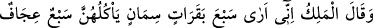
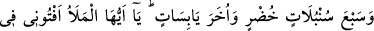
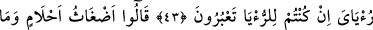
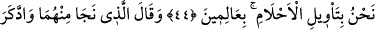
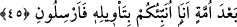

KRALIN RÜYASI
43. Kral dedi ki: Ben (rüyada) yedi zayıf ineğin yediği yedi semiz inek gördüm.
Ayrıca yedi yeşil, yedi de kuru başak gördüm. Ey ileri gelenler! Eğer rüya
yorumluyorsanız, benim rüyamı da bana yorumlayınız.
44. (Yorumcular) dediler ki: “Bunlar karmakarışık düşlerdir. Biz böyle düşlerin
yorumunu bilenlerden değiliz.”
45. (Zindandaki) iki kişiden kurtulmuş olan, uzun bir zaman sonra (Yûsuf’u)
hatırlayarak dedi ki: “Ben size onun yorumunu haber veririm, beni hemen
(zindana) gönderin.”
Bir gün Mısır “Kral”ı Reyyan b. Velid “dedi ki: Ben” rüyada “yedi zayıf ineğin
yediği yedi semiz inek gördüm.”
Rivâyete göre Yûsuf (a.s.)’ın zindandan çıkış vakti yaklaşınca Allah Teâlâ oradan
çıkabilmesini sağlamak için akla hayale gelmeyen bir sebep yarattı.
Anahtarı ortada olmayan birçok kilit vardır
Hangi yolla açılacağı da belli değildir
Onu hemen açacak usta bir el ortada yoktur
Hiçbir ustanın onun açılması konusunda tahmini yoktur
Onun açılması gaybdan gelip zâhir olmalıdır
Senin her murâdın onun açılmasına bağlıdır
Yûsuf kendi hîlelerinden gönlünü koparınca
Tedbir iplerinden olan ayak bağı kesildi
Cenâb-ı Hak’tan başka kalmadı sığınağı,
Ki belâ ve musîbetlerde dayanacağı O ola.
Kendi zannından ve aklından kurtuldu.
İşte şimdi Hakk’ın lütfunun feyiz eli imdâdına yetişti.